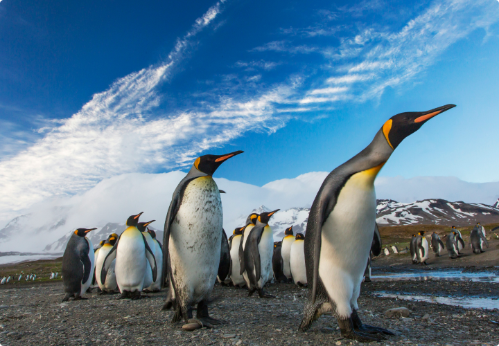

Estima-se que "até 80% das colônias de pinguins-imperadores estarão quase extintas até 2100 com aumentos normais nas emissões de gases de efeito estufa. No entanto, se forem cumpridas as medidas do Acordo Climático de Paris para limitar o aquecimento menor que 2°C, essa estimativa cai para 31%".